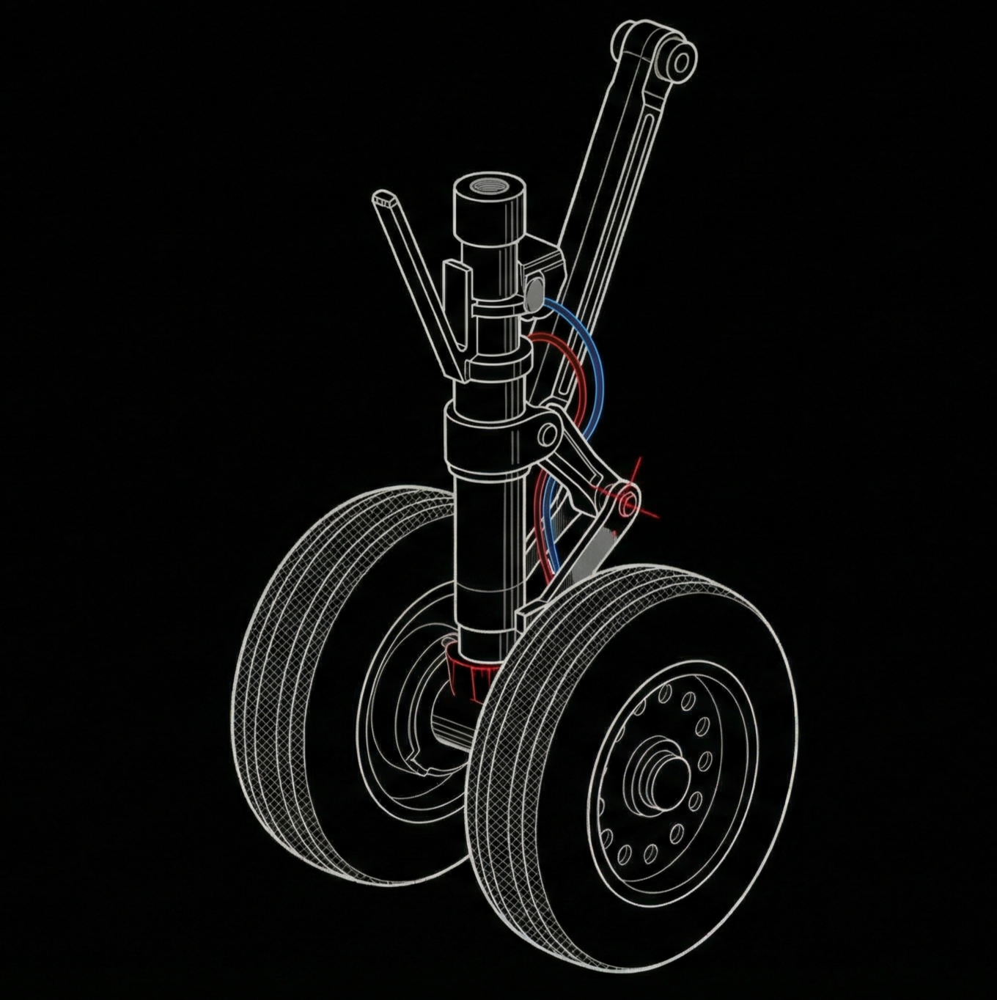

Landing Gear Analysis
Coursework (Team Project - Fall 2025)
Solid Mechanics Design & Failure Analysis
This project designed and analyzed a simplified nose landing gear assembly under a hard-landing load case. The goal was to build a mechanically defensible load path across at least four load-bearing components, then compute stresses, compare failure modes, and verify the design using both hand analysis and FEA. My contributions included:
- System Simplification: Reduced the geometry into analyzable primitives: modeled the main strut as a beam in bending/compression, and the axle as a shaft under combined shear/bending to apply beam theory and combined loading.
- Loading & Assumptions: Built a conservative "hard landing" scenario using a 3g impact load. Converted the external ground reaction into internal forces/moments through a clean load path, with fixed support at the trunnion and point loads at the wheel/axle interface.
- Material Selection: Selected Al 7075-T6 for the strut and 4340 Steel for the axle, then assigned properties and allowable stress limits from standard engineering tables.
- Failure Criteria & Safety Factor: Evaluated yielding using Von Mises, checked critical pins/bolts in pure shear, and verified buckling risk zones on the strut. Computed safety factors for each critical component and identified the governing failure mode.
- FEA Validation: Built an ANSYS model to validate peak stress locations and confirm that hand-calculation assumptions were conservative, especially at the axle–strut interface and geometric discontinuities.
Load Path & Analysis Specs
>> Design / Analysis Constraints
Force Transmission
SUPPORT
TENSION
Tech Stack
Outcome
Delivered a complete landing gear load-path analysis with safety factors for each critical component, plus an ANSYS validation model confirming conservative hand-calculation assumptions.